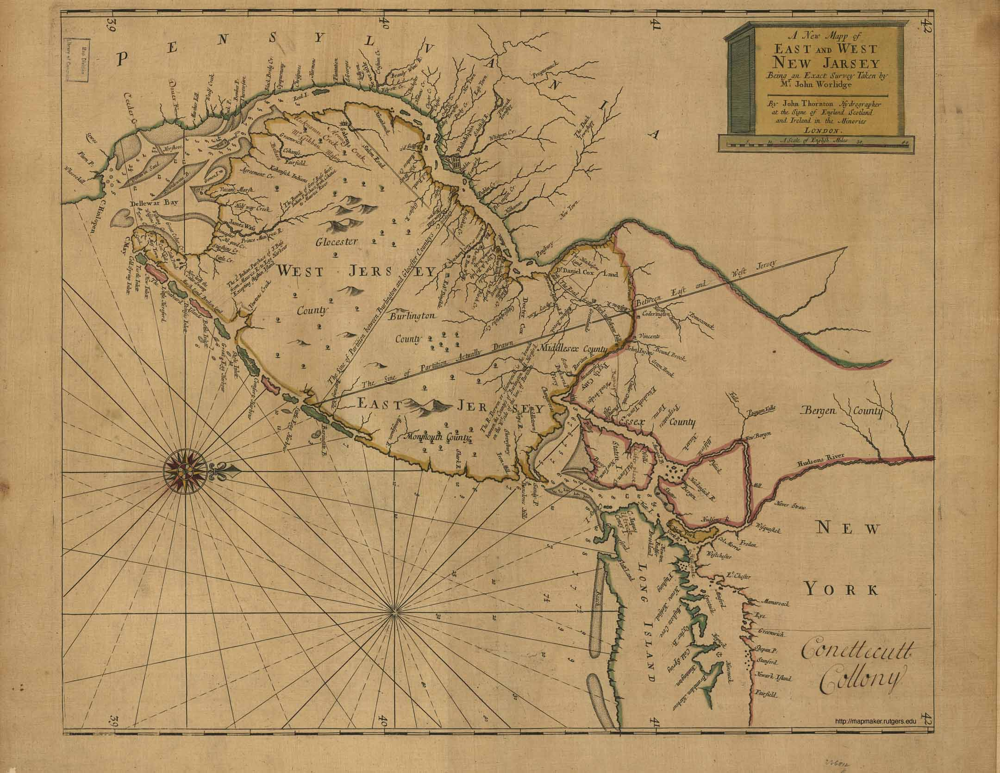
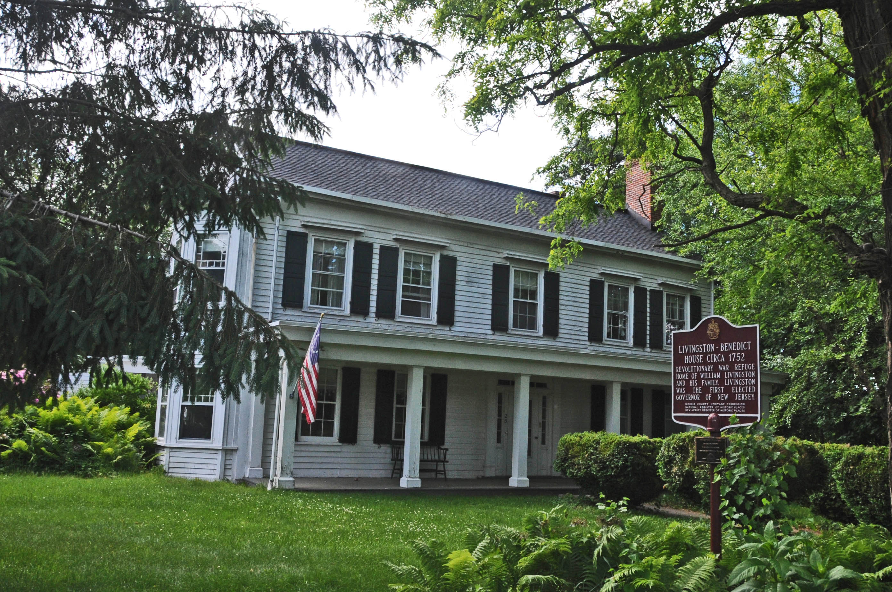

New Jersey was first assembled in 1664 by Sir George Carteret and Lord Berkeley and named after the British Isle of Jersey [1]. The area was originally under Swedish and Dutch rule and a part of New Netherland, but was taken over by the British in 1664. The Dutch regianed control in 1693 and then in 1694 the colony was split into East and West Jersey. Shortly after this in 1702, the colony was united once again [2].
Map of East and West Jersey circa 1706 [7].
New Jersey became a state from a colony in 1787. It was the third colony to become a state according to the Constitution. The city of Trenton was established as the capital in 1790, and William Livingston became the first governor of the state [3].
The current condition of the house of William Livingston [8].
New Jersey is the 11th most populous state, with a population of about 8.9 million. New Jersey is also the third smallest state, with an area of 8,722 square miles. The capital of Trenton has remained the same, but the largest city is now Newark. The state is also referred to as the Garden State, due to its big farming industry [4].
Trenton's Capital Building [9].